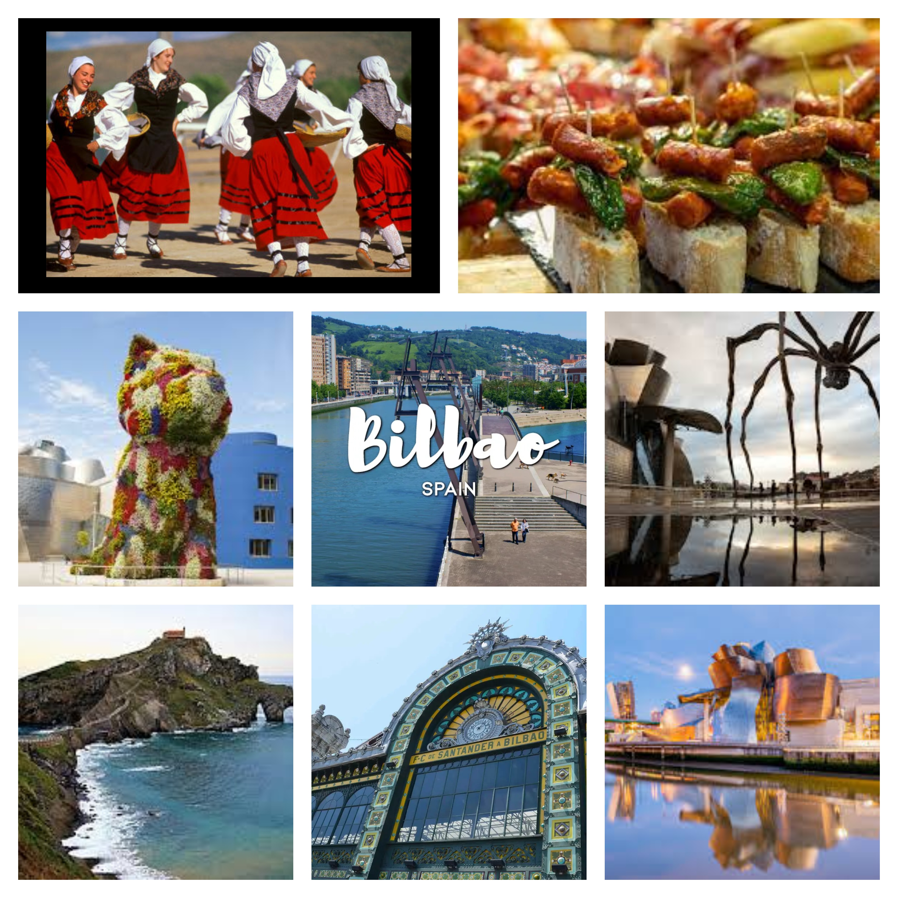

| navagation bar | pg 1 | pg 2 | pg 3 | pg4 | pg 5 | pg6 |
|
context table
|
 | contact us on snis0526@snis.edu.in |
BILBAO
Bilbao, una ciudad portuaria industrial en el norte de España, está rodeada de verdes montañas
Es la capital de facto del País Vasco, con un centro lleno de rascacielos. Es famoso por el Museo
Guggenheim Bilbao, diseñado por Frank Gehry, que provocó una revitalización cuando se inauguró
en 1997. El museo alberga destacadas obras modernas y contemporáneas, pero es el edificio curvilíneo
revestido de titanio el que recibe la mayor atención y Bilbao es famoso por su El emblemático Museo
Guggenheim, famoso por su arquitectura y colección de arte contemporáneo. La ciudad también es
conocida por su deliciosa cocina vasca, con una variedad de platos tradicionales como pintxos y
bacalao al pil-pil.